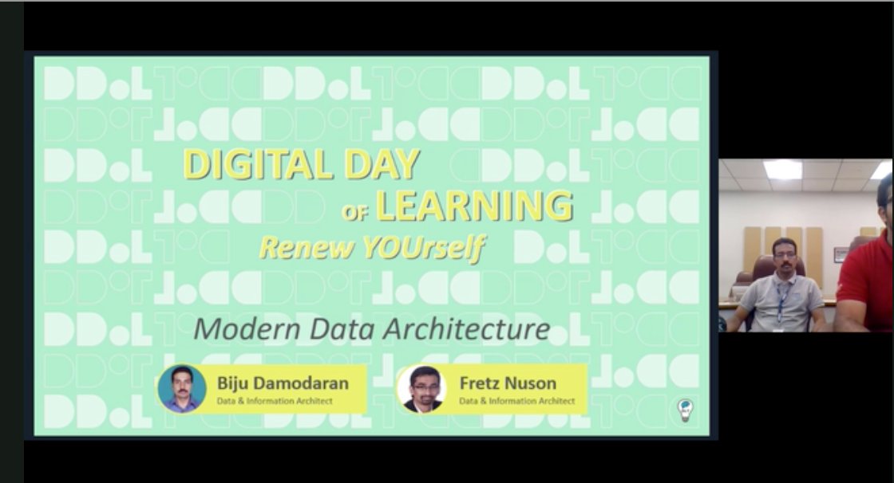
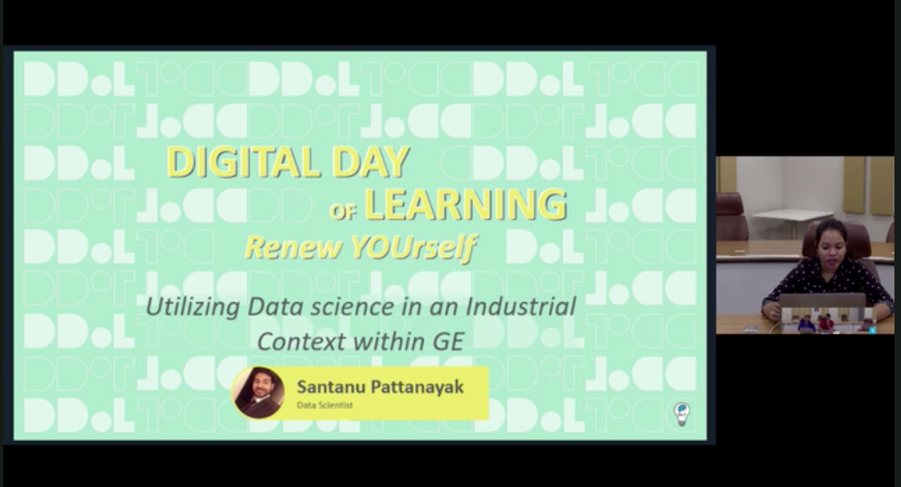
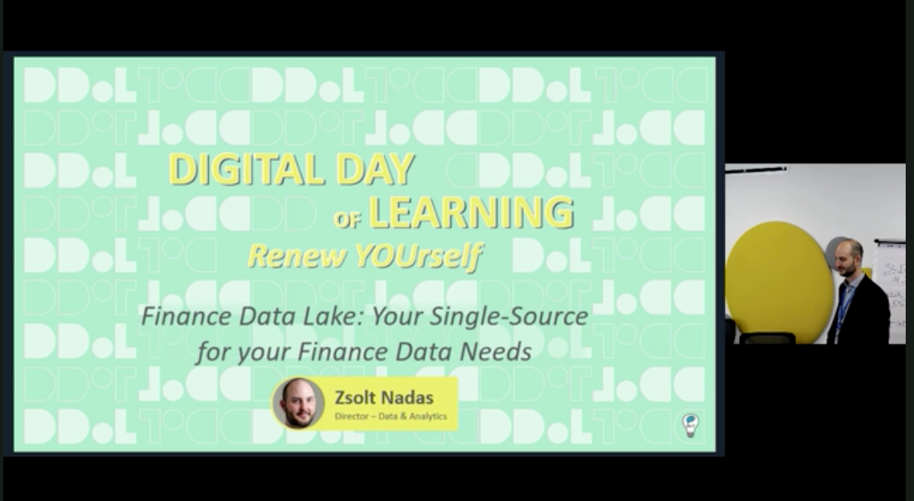
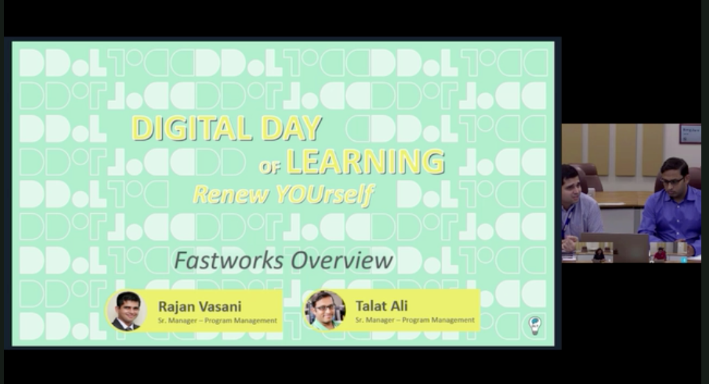
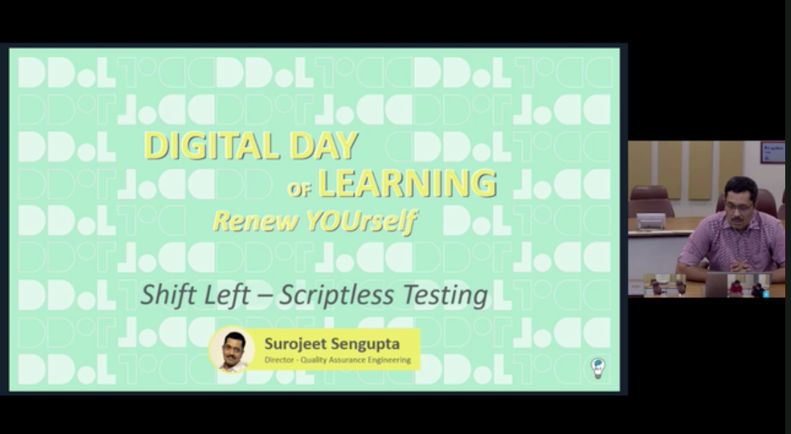
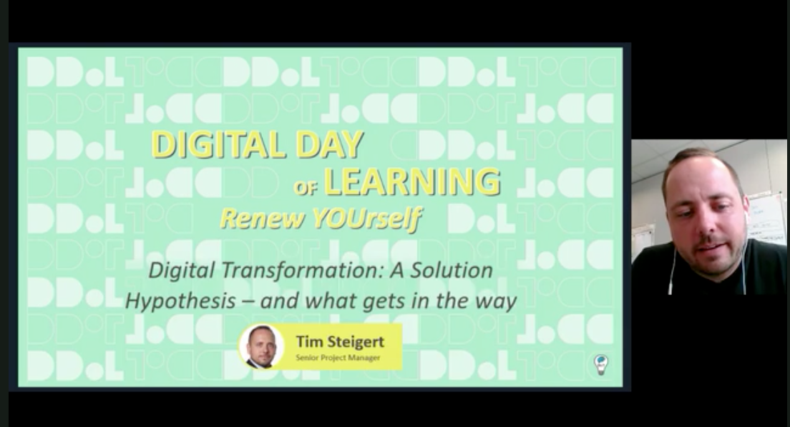
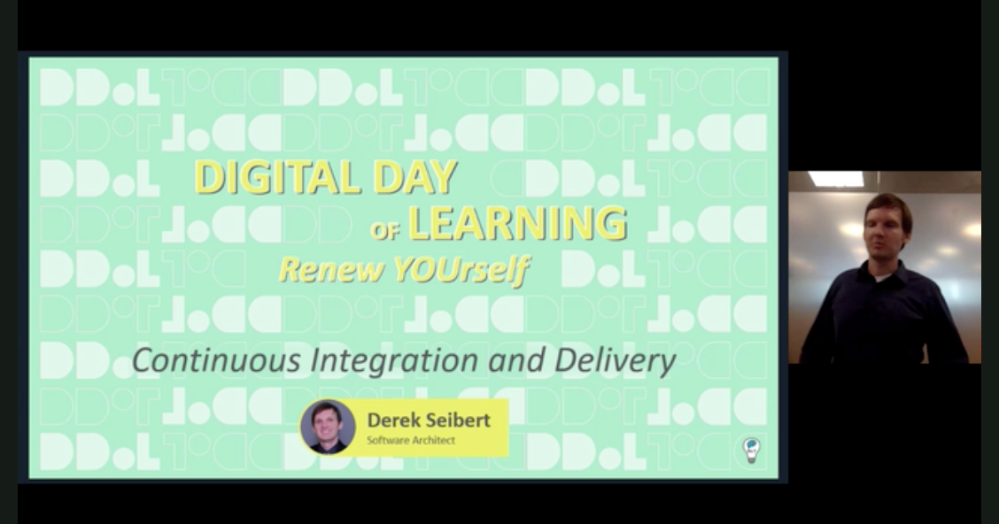
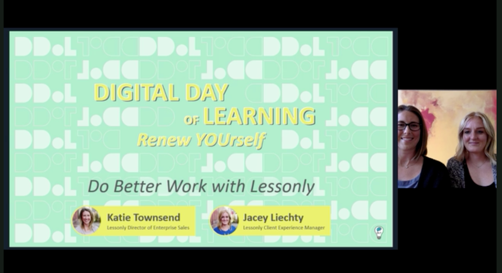
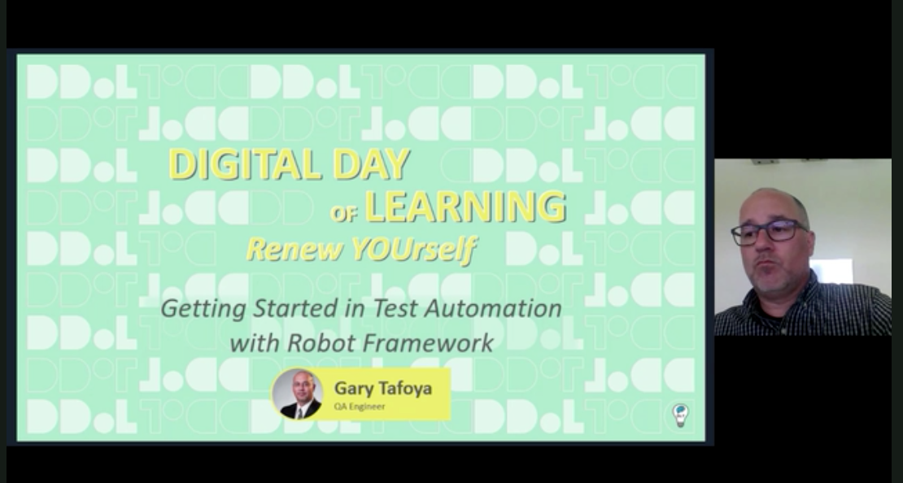
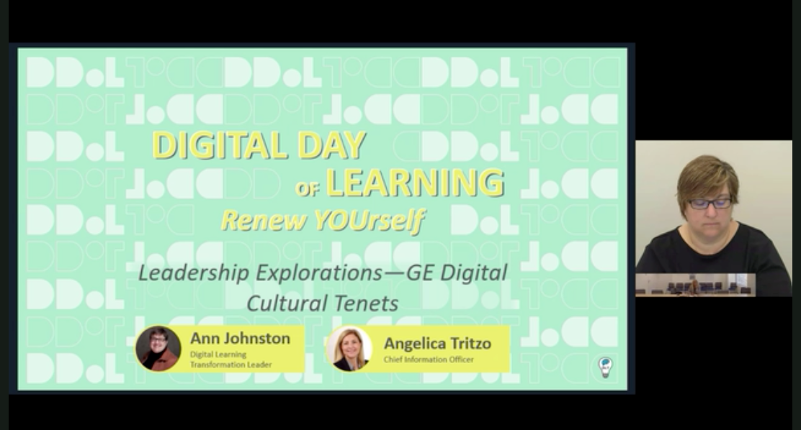

At GE Digital, I co-designed and produced Digital Days of Learning, an annual enterprise learning event that brought together experts from across the organization to share technical knowledge, business insights, and emerging ideas with a global workforce.
Rather than treating the event as a series of standalone webinars, our team built a coordinated learning experience that encouraged continuous learning, cross-functional collaboration, and knowledge sharing at scale. Working closely with subject matter experts, presenters, and production teams, I helped coordinate content development, speaker preparation, technical production, live broadcasting, and participant engagement to ensure a high-quality experience for both presenters and attendees. The event showcased topics ranging from advanced engineering and digital technologies to leadership, business operations, and organizational development, making expertise from across the company accessible to employees around the world.
The examples below represent a selection of webinar sessions and production assets from Digital Days of Learning, demonstrating how thoughtfully designed enterprise learning events can strengthen organizational knowledge sharing, connect experts across disciplines, and build a culture of continuous learning.










Related Case Study
Developer Certification & Technical Enablement
Technical audiences needed clearer pathways into platform development, product analytics, and internal process knowledge.